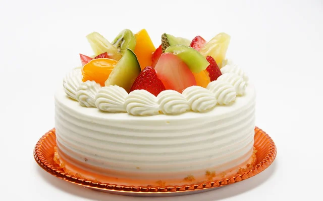
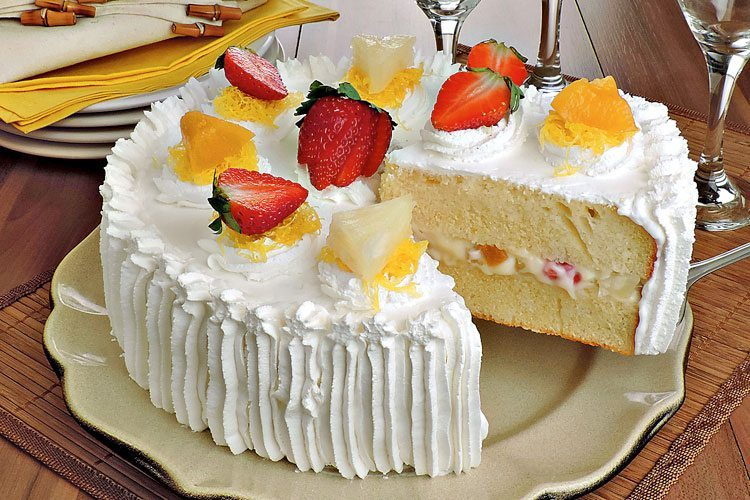

muito gostoso!

☆2 ovos inteiros. ☆1 xícara de açúcar. ☆1/2 xícara de óleo. ☆1 caixinha de creme de leite. ☆(200g)2 xícaras de farinha de trigo. ☆1 colher (sopa) de fermento químico em pó. ☆1 xícara de frutas de sua preferência (podem ser frutas cristalizadas, uvas-passas ou frutas vermelhas frescas/congeladas). ☆1 colher (chá) de essência de baunilha ou raspas de laranja (opcional, para perfumar).

☆Bata a base: Em uma tigela grande, misture bem os ovos, o açúcar e a essência de baunilha com um batedor de arame (fuê) por cerca de 2 minutos. ☆Adicione os líquidos: Junte o óleo e o creme de leite, mexendo rapidamente até homogeneizar. ☆Incorpore os secos: Adicione a farinha de trigo peneirada e o fermento em pó. ☆Misture delicadamente com a espátula apenas até a farinha sumir e virar uma massa lisa. ☆Prepare as frutas: Misture as suas frutas escolhidas com uma colher de farinha de trigo antes de colocar na massa (isso evita que elas afundem todas para o fundo da forma). ☆Adicione à massa: Junte as frutas à massa e misture de forma rápida e delicada. ☆Asse: Despeje a mistura em uma forma (com furo central ou de bolo inglês) untada e enfarinhada. ☆Leve ao forno preaquecido a 180°C por aproximadamente 35 a 40 minutos (faça o teste do palito).